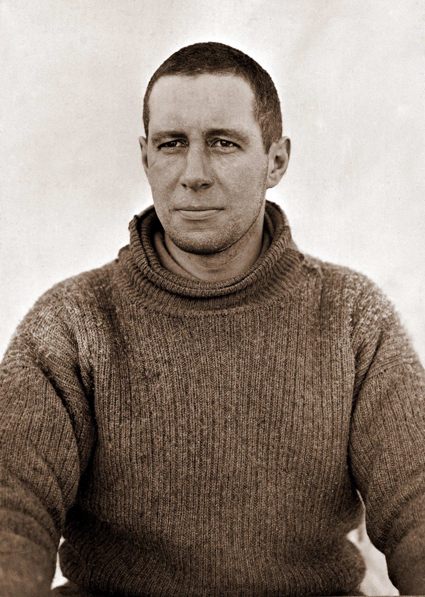

Chapter 17
The Sacrifice at Latitude 79° 50' S
Seen from above, the whole white expanse of the Barrier stretches unbroken to every horizon, a continent of ice where three men and their sledges are no more than a speck, and it is toward that speck that the eye must travel to find the day’s end. The march ended early. Snow drifted against the tent fabric as the men worked in the half-light of an Antarctic autumn afternoon, pitching canvas on ice that yielded to every pressure. They had covered less than two miles that day. The sledge runners had dragged through soft snow. The wind, when it came, had offered no assistance. They settled into their sleeping bags knowing that tomorrow would bring the same choices, the same calculations, the same slow reduction of possibility. But two records survive from that evening of 16 March 1912, and they do not agree on what they witnessed.
—-
Robert Falcon Scott wrote in his journal with the deliberate cadence of a man constructing narrative under duress. He described his companion’s feet—swollen, purulent, gangrenous—and the slow pace that had reduced their march to little more than a mile and a half. He noted Oates’s suffering, his courage, his concern that he was slowing the party.
The entry built toward a conclusion Scott could not yet know but seemed already to foresee: a man who went a good distance on his hands and knees, cheerful, anxious that they should not make a bother about him. The prose arranged itself. The gallant gentleman was taking shape in the tent’s half-light, even as the man himself lay beside him, breathing. According to Scott’s diary entry of 16 or 17 March (Scott was unsure of the date but thought 17 March correct), Oates had walked out of the tent the previous day into a −40 °F (−40 °C) blizzard to his death.
Henry Bowers, in the smaller diary he kept for his own purposes, wrote differently. He noted deplorable feet, black toes, a left foot very swollen. No cheerfulness. No hands and knees. Only the arithmetic of their position: latitude 79° 50’ S, still twenty miles from the next depot, food for perhaps two days at full ration, speed reduced to a crawl by a man who could no longer pull his share and could barely walk. Bowers recorded what he saw; Scott recorded what the seeing would need to mean.
The gap between these accounts—written in the same tent within hours of each other—measures something more than individual temperament. It measures the distance between event and explanation, between what was happening and what would need to be said about it. The polar party had become, in Scott’s journal, a story already being told to posterity; in Bowers’s diary it remained a problem of ice, flesh, and dwindling numbers.
—-
Lawrence Edward Grace Oates was thirty-two years old on 16 March 1912. He had been born on 17 March 1880; later readers would notice how close those dates ran together. He was a captain in the 6th (Inniskilling) Dragoons, a cavalry regiment; he had joined the expedition as officer in charge of ponies. The ponies were dead now—shot or collapsed on the Barrier—their meat cached or consumed. Oates had remained with the final party walking south; then he walked back.

His feet had begun to fail early. The return from the Pole—reached on 17 January and found already claimed by Amundsen’s black tent and flag—had exacted its toll in sequence. Edgar Evans died first near the foot of the Beardmore Glacier: scurvy and falls weakened him until his mind clouded and he could no longer help himself; that was 17 February. The four survivors continued down the glacier to the Barrier expecting speed from level ice; it did not come because surface stayed soft and temperatures ran lower than records suggested for this season while wind either failed them or turned against them; meanwhile Oates’s feet kept deteriorating.
Frostbite is a progressive injury. It begins with numbness, the tissue freezing, ice crystals forming in cells that then rupture and die. The affected areas turn white, then mottled, then dark. Gangrene sets in as the dead tissue separates from the living, the body’s own bacteria consuming what the cold has killed. Oates’s feet had passed through these stages while he walked on them. By mid-March, the damage was irreversible. He could not feel the ground. He could not balance properly. Each step required conscious effort against a body that no longer responded as it should.
Scott’s journal described him plugging along at the head of the party. Bowers’s diary, and Wilson’s, record something else: a man falling behind, requiring stops, reducing the daily mileage to figures that made their survival calculations impossible. On 15 March, they had managed only three and a half miles. On 16 March, less than two. The depot they needed—Middle Barrier Depot, with its modest cache—remained distant. The larger depot beyond it, One Ton, with its greater stores and the possibility of meeting relief, had become theoretical. They were moving too slowly to reach it with the food they carried.
This was the arithmetic that filled the tent on the evening of 16 March. Four men. Food for perhaps two days at full ration, longer if reduced. Twenty miles to the next depot at their current speed—ten days or more. And one man whose pace was destroying the equation.
—-
They had stopped at a depot that day, though the records disagree on its significance. Scott called it their depot and noted they had left a sledge there on the outward march. Bowers recorded it as their depot of 3rd January, a precise location in latitude and longitude. Wilson, in the scientific diary he maintained, noted simply that they camped at depot. The sledge they had left held a small cache: oil, perhaps some biscuit, the remnants of planning done in warmth and confidence. It was not enough. They took what they could carry. The rest remained, marking a point they had passed in hope and now reached in desperation.
The night of 16 March brought no improvement. Oates’s condition worsened. Scott’s journal, written the following day with deliberate uncertainty about dates, described a terrible night, the injured man waking to find his feet more useless than ever. The temperature in the tent was low enough that their breath froze on the fabric above them. The blizzard that had pinned them earlier had passed, but the stillness that followed was almost worse—no wind to clear the air, only the dense cold of the Barrier in autumn, when the sun still circled but delivered little warmth.
Oates spoke in the night. Scott recorded his words with the care of a man transcribing what he knew would be remembered: he was just going outside and might be some time. The phrasing has become famous, taught and repeated as the epitome of British understatement and sacrifice. But the context matters. Oates had spent hours, perhaps the entire night, in consciousness of what his continued existence cost the others. His feet were dead weight. His rations were consumed. His pace was killing them.
The act that followed was not impulse. It was calculation dressed as gesture.
—-
He left the tent on 17 March 1912, his thirty-second birthday. The temperature was approximately minus forty degrees Fahrenheit, the point where the Fahrenheit and Celsius scales converge, where breath freezes in the air and exposed skin dies in minutes. The wind was blowing. Scott described it as a blizzard, though the meteorological records from the period suggest conditions more variable than this term implies. What is certain is that Oates walked into air that would kill him quickly, and that he did not return.
Scott’s journal constructed the scene with care. They knew that poor Oates was walking to his death, but though they tried to dissuade him, they knew it was the act of a brave man and an English gentleman. The cadence is unmistakable—brave man and English gentleman—the pairing that would echo in the cairn and cross erected later by the search party: hereabouts died a very gallant gentleman, Captain L.E.G. Oates, of the Inniskilling Dragoons. The narrative was complete before the body was cold. Or rather, the narrative was complete because the body would never be found, would never contradict the story with its actual posture, its actual distance from the tent, its actual evidence of struggle or ease.
Bowers’s diary for 17 March records something else. He dated the entry 16 March with a correction, noting that Titus Oates died last night about half past twelve. He walked out into the blizzard without his boots on. No brave man. No English gentleman. Only the fact of barefoot departure, the detail that Scott omitted, the physical reality of gangrenous feet that could no longer bear even the weight of footwear, or the psychological reality of a man who removed what he could not feel and walked into cold he could not survive.
Wilson’s diary, more fragmentary, confirms the essential facts: Oates left, Oates did not return, the others remained. The three records together—Scott’s narrative, Bowers’s clinical note, Wilson’s spare confirmation—describe not a single event but its refraction through three consciousnesses, three understandings of what was required and what could be said.
—-
The tent on the morning of 17 March held three men where four had slept. They had Oates’s share of the rations now, redistributed according to the mathematics that had governed the expedition from its planning in London. The daily allowance was precise: biscuit, pemmican, cocoa, tea, oil for cooking, calculated for energy expenditure at specific temperatures and workloads. The planners had not calculated for this.
Scott wrote of their continued march with determined optimism. He admitted they were in very low spirits, then added that they march on. The weather had improved slightly. The surface remained bad. Their own condition—Wilson’s feet now showing damage, Bowers’s strength depleted, Scott’s shoulder injured from a fall—made progress slow. But they were three, and three could travel faster than four with one disabled.
The silence in the tent after Oates’s departure was not the silence of shock. It was the silence of confirmation. Each man had understood, without speaking, that the threshold had been crossed—that the expedition’s survival logic, which had already absorbed Evans’s death as an unfortunate data point, had now claimed a second member through deliberate self-selection. They lay in their bags, breathing frost, listening to wind that no longer carried the sound of a companion’s struggle. What they felt, none recorded. What they calculated, each understood.
The mathematics of their position had hardened into something approaching certainty. At their current rate of advance—two miles on a good day, less when the surface softened or when wind forced them to camp—they required ten days to reach Middle Barrier Depot. They possessed food for perhaps four days at full ration, longer if they halved their allowance and accepted the weakness that hunger would bring. The gap between requirement and supply was not bridgeable through effort or will. It was bridgeable only through reduction: fewer mouths, fewer feet to slow the pace, fewer variables in an equation that had been failing since January.
This was the expeditionary arithmetic that Scott had learned in his years of naval service, the calculus of coal consumption and water supply and crew complement that governed polar voyaging as surely as it governed fleet maneuvers. Every expedition carried implicit contingency: the weakest member might fail, might be left behind, might, in extremis, be sacrificed for the survival of the mission. What distinguished Antarctic sledging from shipboard discipline was the absence of hierarchy. Oates had no captain to order him overboard. He had only the accumulated evidence of his own deterioration, the visible exhaustion of his companions, and the silent pressure of their shared knowledge.
The pressure operated through small things. The extra minutes required to break camp while Oates struggled with his boots. The halts every half-mile to allow him to catch up. The redistribution of sledge weight that placed heavier burdens on healthier shoulders. These increments, repeated across days, had become unsustainable. Bowers’s diary, with its precise notations of latitude and mileage, recorded the conversion of human difficulty into navigational fact: latitude 79° 50’ S, march 1.5 miles, Oates’s feet very bad. The numbers did not judge. They simply measured the distance between possibility and impossibility.
The depot they had reached on 16 March—whether called “our depot” by Scott or identified by precise coordinates by Bowers—represented the last point where their outward journey had seemed viable. On 3 January, with the Pole still ahead and their strength relatively intact, they had left this cache as insurance against return difficulty. Now it served as a marker of miscalculation. The sledge they found held less than they remembered, or less than they needed. The oil was critical—they were burning more than planned, the cold requiring longer cooking times, the primus stoves functioning poorly as pressure dropped—but oil alone could not substitute for the caloric deficit that was consuming their bodies. They took what they could carry and abandoned the rest, leaving behind the material evidence of optimism that no longer applied.
The night that followed was, by Scott’s account, terrible in its clarity. Oates could no longer conceal what his feet had become. The gangrene had advanced beyond the possibility of recovery, the dead tissue separating from living flesh in a process that produced both odor and danger. Sepsis—the systemic infection that follows when bacterial colonies breach their local boundaries—was likely already beginning. In warmer climates, such wounds would demand amputation; on the Barrier, they demanded only management of the inevitable. Oates lay in his bag, conscious, conversing, aware of what his continued existence required of others.
The conversation that passed between the men remains unrecorded in direct form. Scott’s journal preserves only Oates’s final statement, framed as spontaneous departure: “I am just going outside and may be some time.” The phrasing suggests rehearsal, or at least preparation—an announcement rather than a sudden impulse. Bowers’s note that Oates walked out without his boots suggests something more: a man who had already accepted that his feet, whether booted or bare, could carry him no farther, and who chose to remove what had become useless appendage rather than struggle with what he could not feel. The absence of boots was not negligence. It was recognition.
What the three survivors did in the hours after Oates’s departure—whether they slept, whether they spoke, whether they listened for sounds that did not come—remains their private history. The expedition’s records resume with the practical necessities of morning: the redistribution of Oates’s bag, his food, his personal effects. These items were not buried or marked. They were absorbed into the remaining system, the dead man’s rations added to the common store, his equipment distributed according to need. The efficiency was absolute. The grief, if it existed, found no expression in the documents that survived.
The march that began on 17 March proceeded under conditions that Oates’s sacrifice was intended to improve. Three men could pull a lighter load per capita. Three men required fewer stops. Three men could maintain, in theory, a pace that four with one disabled could not achieve. Scott’s journal acknowledged this logic without naming it: “We march on.” The phrase contains multitudes—the acknowledgment of continued obligation, the suppression of reflection, the forward motion that was all that remained of purpose.
Yet the improvement was marginal. Wilson’s feet, noted in passing in the same entries that recorded Oates’s departure, were showing the same progression that had destroyed his companion. The damage was slower, less advanced, but the pattern was established. Bowers, the strongest of the three, was consuming himself in the effort to maintain pace. Scott, whose shoulder injury from a fall on the glacier had never fully healed, was reduced to pulling with one arm in effective rotation. The variables that Oates had removed from the equation were being replaced by new variables, new deteriorations, new impossibilities.
The weather, which had moderated slightly on the morning of 17 March, offered no sustained relief. The Barrier in March occupies a meteorological transition: the sun still circles above the horizon, but its angle delivers diminishing warmth; the temperature drops toward the winter minimum; the wind, when it comes, carries polar air from the interior plateau with killing force. The surface, which had softened in the unseasonable warmth of early March, was beginning to harden in ways that damaged sledges and exhausted men. Each mile gained was measured against these conditions, each camp established in the knowledge that the next day would bring equivalent difficulty.
The distance to One Ton Depot—still their essential objective, with its larger cache and its possibility of meeting the relief party that had been dispatched from Cape Evans—remained approximately fifty miles. At their improved but still inadequate pace, this represented two to three weeks of travel. Their food, even with Oates’s share redistributed, would not sustain them for that duration. The mathematics that had produced Oates’s sacrifice had not been solved by it; they had merely been postponed, the same equation operating with slightly reduced constants.
This was the truth that the three men carried with them as they marched on 17 March, and that Scott’s journal approached but could not state directly. The gallant gentleman had died, by Scott’s account, to save his companions. But the companions he had saved were themselves beyond saving, their own deterioration proceeding according to biological laws that expeditionary arithmetic could not modify. The sacrifice had been real in its intention and its execution. Its efficacy was another matter, to be measured not in the days immediately following but in the silent camps that lay ahead, where the same calculations would continue, where the same pressures would operate, where the same silence would eventually fall.
This was the logic Oates had accepted. The sequence of failures that had begun with soft snow, with fuel consumption faster than planned, with temperatures lower than the records suggested, had now reached a point where a human being became a variable to be removed. Oates had removed himself. The system, designed for efficiency, had produced this efficiency: a man walking into cold because the alternative was to watch three others die with him.
The remaining trio—Scott, Wilson, Bowers—continue their march, now carrying Oates’s share of rations but still trapped by the same brutal arithmetic of distance and supply.